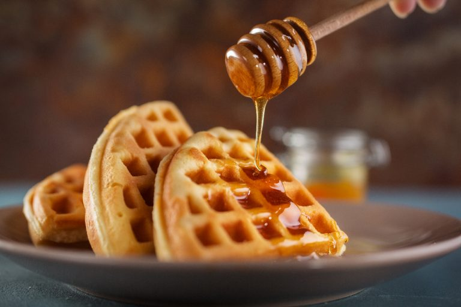

Classic Waffles!

Description
This waffle recipe is the only one you'll need to make homemade waffles with your waffle iron! Simple pantry ingredients mix up quickly in this easy batter that can be used right away or stored in the refrigerator for up to a week. Serve waffles hot with whipped cream and fresh fruit or with butter and maple syrup for either breakfast, brunch, or a snack.
Ingredients
- 2 cups all-purpose flour
- 1 teaspoon salt
- 4 teaspoons baking powder
- 2 tablespoons white sugar
- 2 eggs
- 1 ½ cups warm milk
- ⅓ cup butter, melted
- 1 teaspoon vanilla extract
Steps
- In a large bowl, mix together flour, salt, baking powder and sugar; set aside. Preheat waffle iron to desired temperature.
- In a separate bowl, beat the eggs. Stir in the milk, butter and vanilla. Pour the milk mixture into the flour mixture; beat until blended.
- Ladle the batter into a preheated waffle iron. Cook the waffles until golden and crisp. Serve immediately!